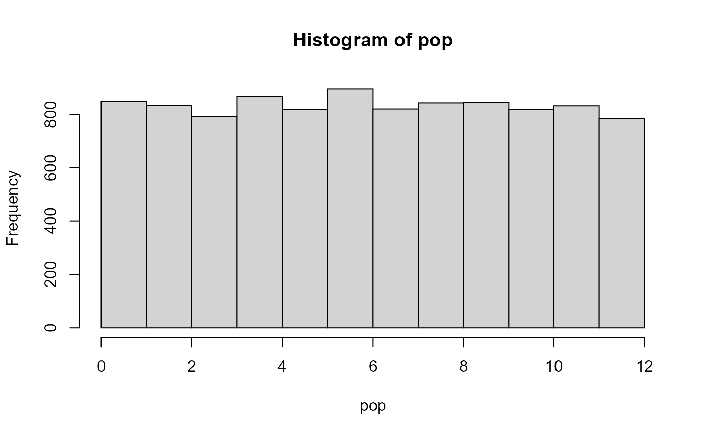
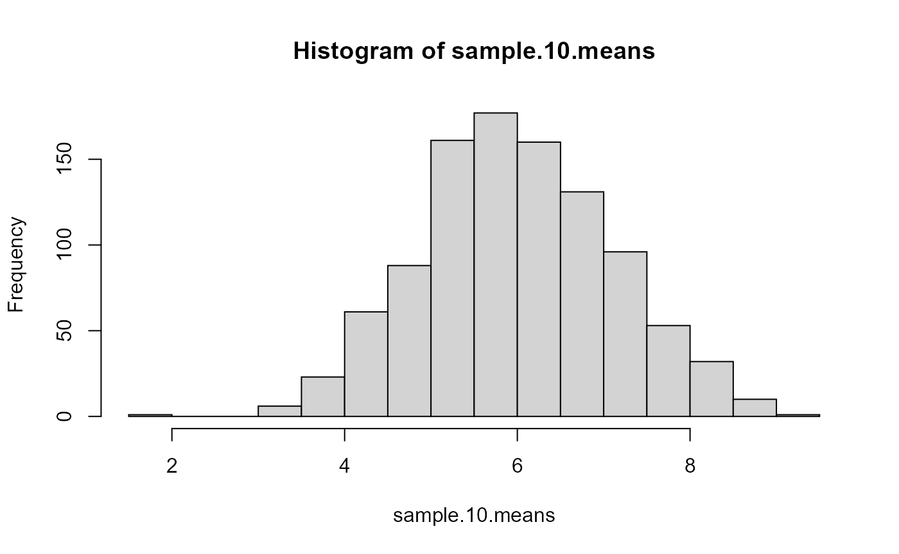

SRSampling function in SRS package to illustrate the Central Limit Theorem.If we generate a large amount of random numbers following \(\mathcal{Unif}(0,12)\) and assume they are the target population of interest. Let’s see the distribution of the target population, as well as the summary statistics.
# generate target population: pop
set.seed(123)
pop <- runif(10000, 0, 12)
# the histogram should be close to the uniform density
hist(pop)
# population mean; should be close to E(X)=6
mean(pop)
#> [1] 5.970592
# population variance; should be close to Var(X)=12
var(pop)
#> [1] 11.83583Use the SRS package to take multiple SRS from the population and study the sampling distribution.
library(SRS)
set.seed(123)
sample.10 <- SRSampling(pop, size=10, rep=1000)
#> 1000 runs of simple random sample of size 10 are drawn from x
#>
#> The SRS for each run of samplings are NOT included in the result
# extract the sample means for every SRS
sample.10.means <- sample.10$sample.mean$values
# the histogram
hist(sample.10.means)
# mean of sample mean
sample.10$sample.mean$mean
#> [1] 5.995313
# var of sample mean
sample.10$sample.mean$se^2
#> [1] 1.24167
set.seed(123)
sample.100 <- SRSampling(pop, size=100, rep=1000)
#> 1000 runs of simple random sample of size 100 are drawn from x
#>
#> The SRS for each run of samplings are NOT included in the result
# extract the sample means for every SRS
sample.100.means <- sample.10$sample.mean$values
# the histogram
hist(sample.100.means)
# mean of sample mean
sample.100$sample.mean$mean
#> [1] 5.942991
# var of sample mean
sample.100$sample.mean$se^2
#> [1] 0.1103998